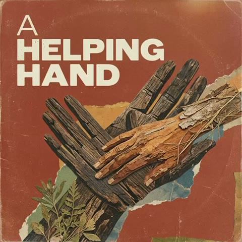

The Road to Recovery
Our podcast.
Honest conversations with people who have lived it — graduates of the program, family members, counselors, law enforcement, and community partners.
Listen to the theme
“A Helping Hand” — the theme song for The Road to Recovery. 30 seconds, with captions.
Why we made a podcast
Most of what people believe about addiction they learned from a headline. It is very hard to argue someone out of that with a fact sheet. It is much easier when they hear a neighbor say, in their own voice, what happened to them and what got them out.
The Road to Recovery is where those conversations go. Graduates of the Flagler County drug court program, the families who waited on them, the counselors and deputies and judges who work the program, and the local businesses that hire people coming out of it.
Nobody appears on this show who did not ask to. Records tied to substance use treatment are protected under 42 CFR Part 2, and we treat a person’s story as theirs to tell or to keep.
Want to be on it?
If you have been through the program, or you work alongside it, or your business hires people in recovery — we would like to talk to you.
The words
The theme song in full, for anyone who would rather read it.
When you’re walkin’ a tough road and need a friend,
a helping hand to make the struggle end.
Here in Flagler County, hope is strong —
we’ll help you find where you belong.Find your strength on the road to recovery.
On the Road to Recovery podcast.
Where to listen
Episodes
The show is produced locally by the Foundation. Full episodes will be linked here as soon as the feed is public.
[PODCAST LINKS — CLIENT TO SUPPLY] Send the Spotify / Apple Podcasts / YouTube URLs for The Road to Recovery and we will add the listen buttons here, an episode list under them, and a link in the site footer. If you have an RSS feed URL, that one link is enough — we can pull the episode list from it automatically.
For local businesses
Every event sponsor gets an episode. Most never claim it.
Sponsor one of our events and a free 15-minute episode of The Road to Recovery comes with it — your business, in your own words, on the channel most people actually pay attention to now.
We do not put two competing businesses on the same episode. Whoever comes in first has that show to themselves.
